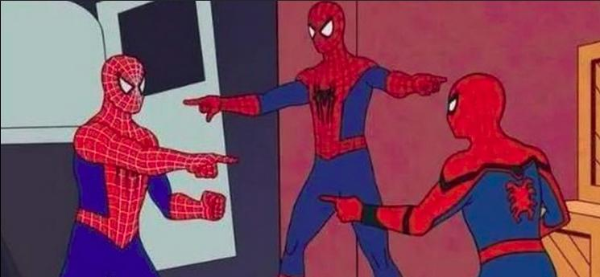

I have been watching Tim Cain on Youtube , the creator of Fallout. And one of his videos discussed an approach to starting off in game development at Coding Toys (Insomnia Edition) . It inspired me to build a toy, and that lead to the idea of a video game. First, I had to take an inventory of myself, my skills, and my perseverance. Thanks for the inspiration, Tim! I am glad you couldn't sleep that night. I always appreciate your insights.
There are a few things I like to do:
And there are a few things I am bad at:
I first wanted to figure out how to use my keyboard as a piano, because that seemed like a good Learning and Coding activity to get familiar with my new Development Environment . I also wanted the result to be usable as broadly as possible, so it had to run in a plain old modern day web browser. I used ToneJS for the music synthesis because I didn't want to reinvent the sound engineering wheel. I would be terrible at that. I also used VueJS to make the UI easier to work with. I used it previously on a couple of other pages already, and a new framework was not the focus of this project.
Once I built the Keybiano page , I needed to figure out how I could play it since I don't have any musical background. At first I transcribed notes into json files by hand using sites like Super Mario on NoobNotes. I had to play the songs using my memory of the note timings. It worked great, but adding new songs was a pain, and playing them on a static page was not much fun. It was time to try new things. Then I recalled the fun I had with games like Guitar Hero, Rock Band, Dance Dance Revolution, Just Dance, etc... and I wanted to take my keyboard based piano to that experience.
My task was to figure out a way to get json with all the data I would need for a song, and that proved to be too much for my tiny attention span. So I searched for ways to make use of existing midi files instead. That led me to ToneJS/Midi , which can take midi files and turn them into json objects usable with ToneJS. I started with the ToneJS Midi Demo Page , and I worked on incorporating the game elements on top of that. This Github Commit is the first result of that work. All it did at this point was accept a midi file, and when you clicked on play, all the notes for the first track would fall down the canvas and play the provided song. It was enough to convince me I was on a good path to building out a whole game.
By this point, the main Midiestro page is a mess of Keybiano and the ToneJS Midi demo page along with my first iteration of the SongNoteRenderer. The options were very bare bones at this point because just getting the page to move the notes was an huge accomplishment. None of the notes were filtered out of the songs, but the player could only select a subset of notes from a single track anyway. I knew there was a long way to go, but I felt confident that between me and my trusty Llama3.1 8b helper and a hand full of alternative models to query, I could figure out how to make a responsive rhythm game that could keep me entertained for minutes at a time.
The SongNoteRenderer was my first experience with the HTML canvas API. I chose not to use any additional libraries at this point because I felt the page overhead was already pretty big with VueJS and the ToneJS libraries for Midi and WebAudio. I figured my use case was simple enough, and I would benefit from understanding the canvas API if I ever did decide to make use of a game or animation library in the future.
I used Llama to get me started, trying to describe what I wanted to do and see what it could figure out. I already had some idea of how it should go because I started with a simple text scroller in renderNotesPlaying to get an idea of how the notes moved with the ToneJS now() value. Then I used input from Llama to guide me to some good examples of canvas drawing on Google. From there I decided to build renderNotesPlayingForCanvas , which contained three concerns:
This process happened on this interval in the main page every 20 milliseconds, which meant the game would play at about 50 frames per second.
At this point, the page needed all 20 milliseconds to process each frame of the game. I tested the site on several machines, some of which had different performance profiles when plugged in or unplugged. The lowest spec machine I tested with was an Asus ROG i7 4700HQ laptop. It has an NVIDIA 850m graphics chip, but I ran the laptop on battery, with Linux Mint 22 with the GPU disabled. When I played Nightmare Before Christmas, the page stuttered noticeably, but overall the effect was smooth enough for a first try. The music stayed aligned with the notes on the canvas thanks to the use of Tone.now() to set the value of now in the song renderer method. I knew I would need to make some changes to try to improve performance, because this game should be able to run on a potato.
The game was not really a game yet. It was just disparate systems running at the same time. I preciently had thoughts on what I should tackle and included them in an update to the Disclaimer, knowing that a future me would want to remember what I was thinking at the time.
And now that future me is you!
